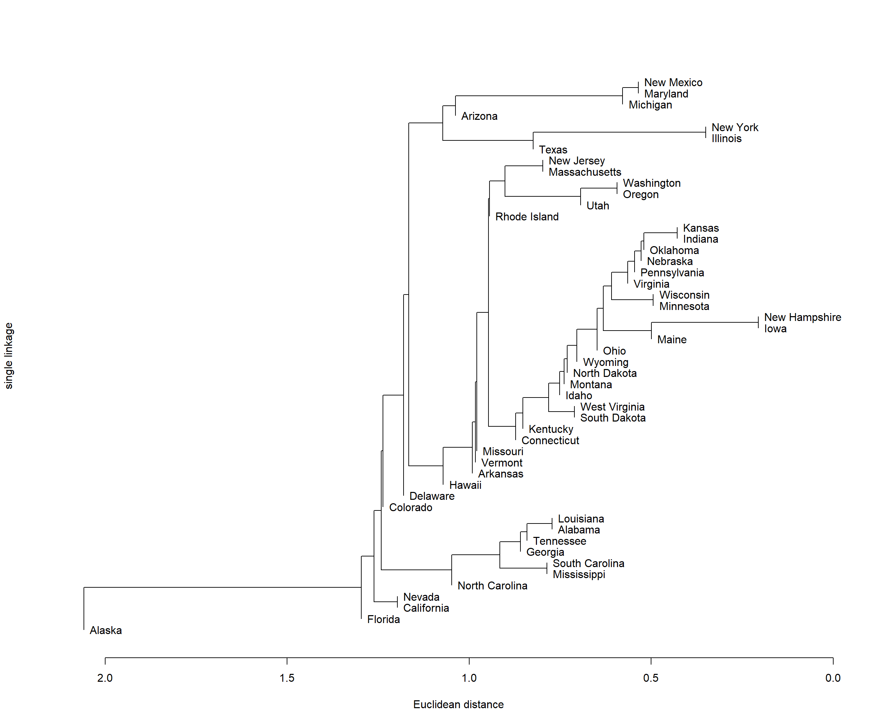
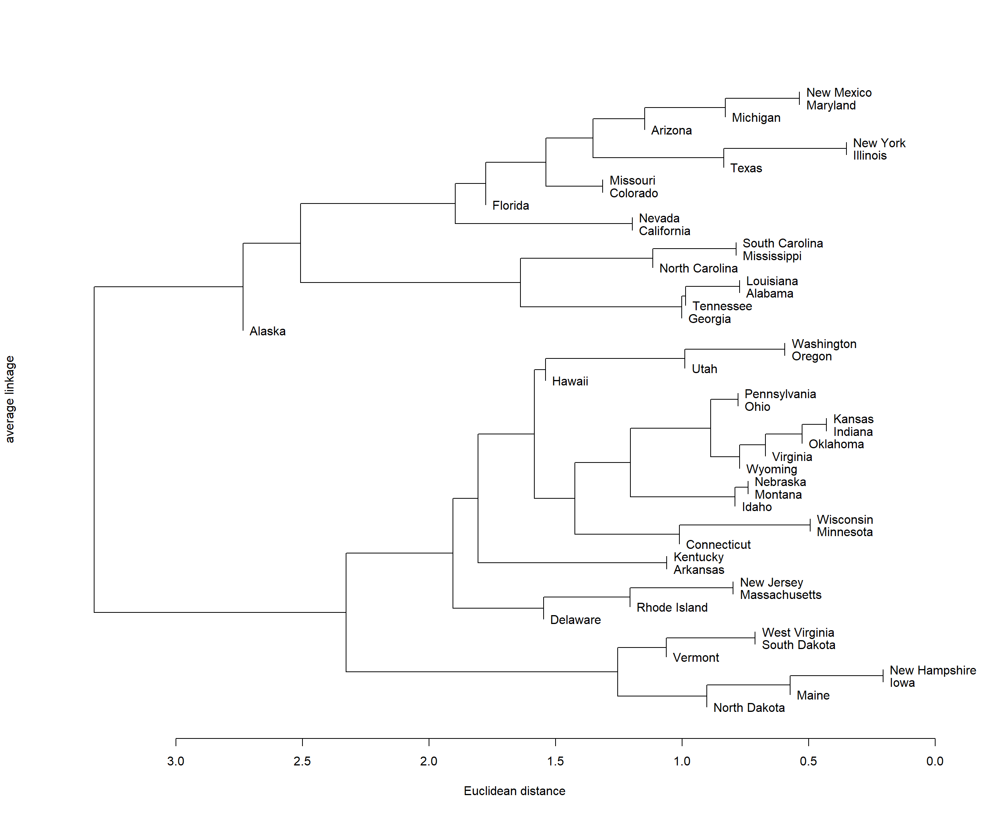
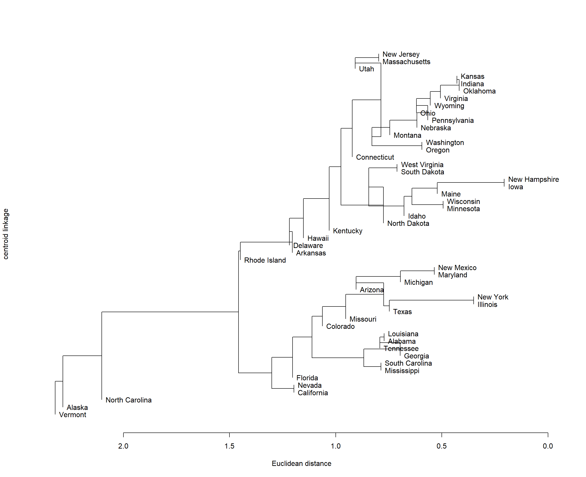
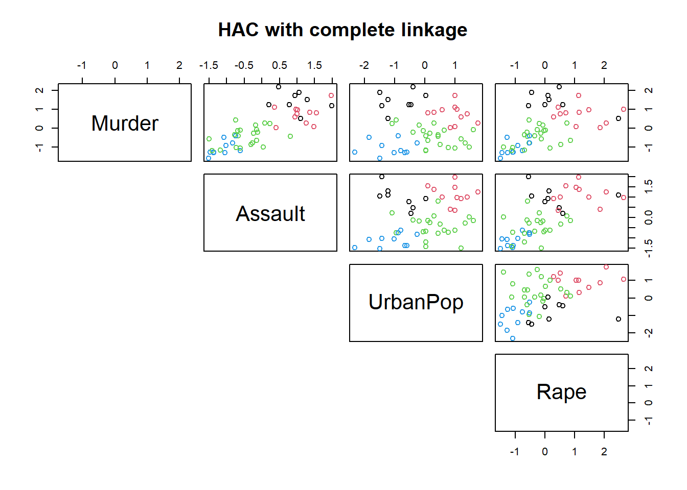
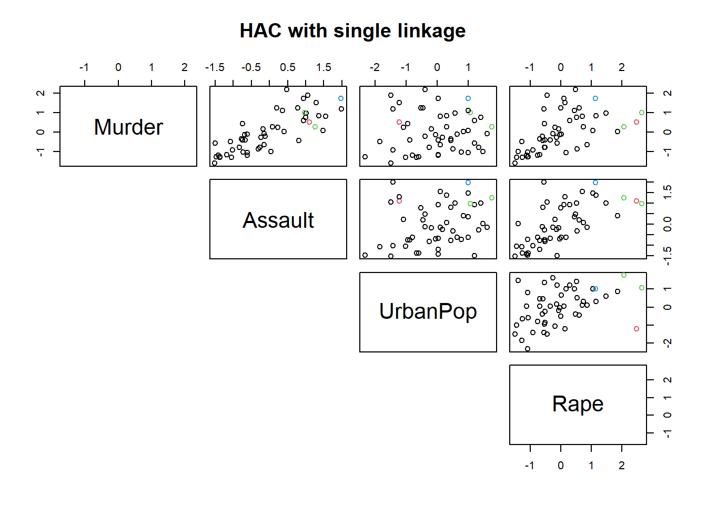
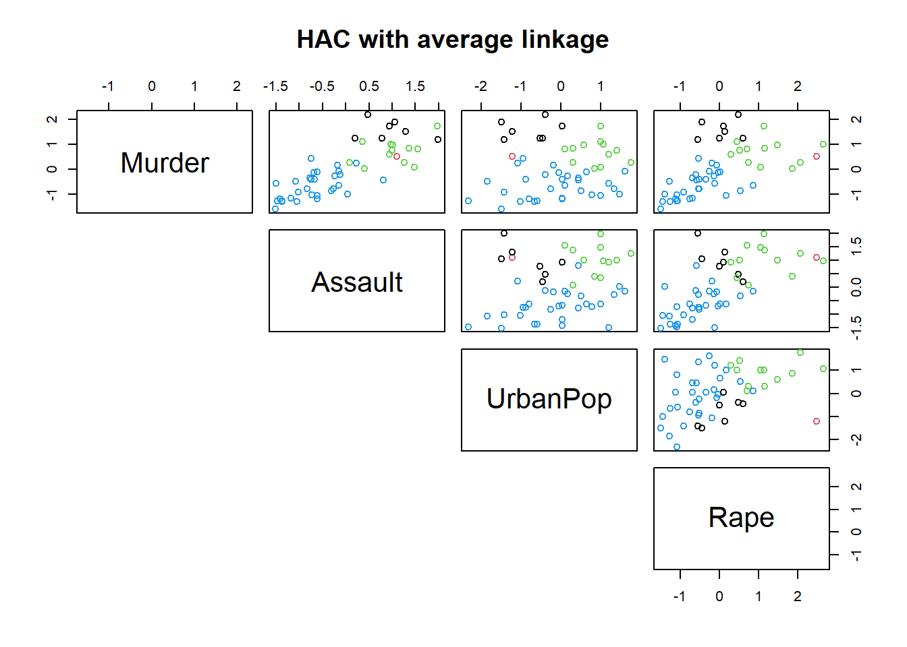
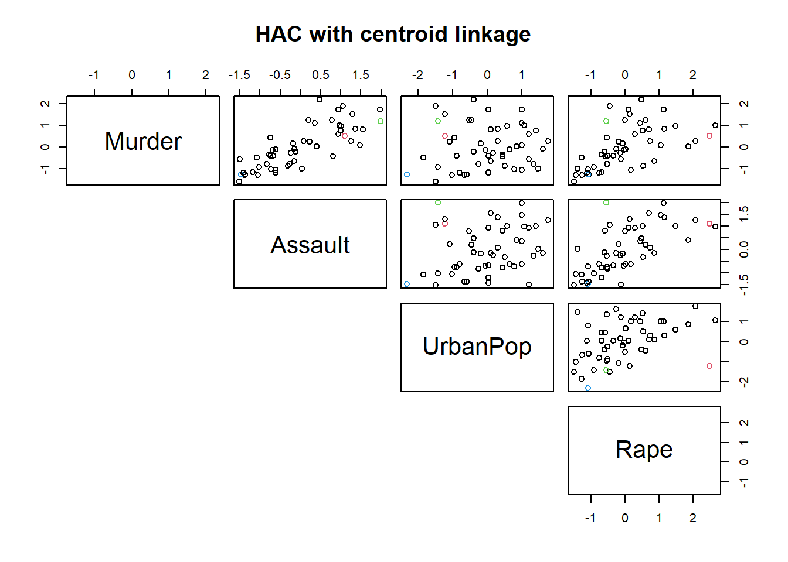

2 Exercise 1: Tasks 2-7 in lecture notes
In Example 3 of Week 8 lecture note, we have performed HAC on USArrests data using the following commands.
USArrests <- scale(USArrests)
usarrests.clus <- hclust(dist(USArrests))
plot(as.dendrogram(usarrests.clus,hang = 0),ylab="complete linkage",
xlab="Euclidean distance",horiz=TRUE)Figure 2.1: Dendrogram resulting from HAC on USArrests dataset
Note that in the above R code, we start by scaling/standardising the data using the function scale. This is important as we don’t want the clustering algorithm to depend to an arbitrary variable unit.
Reading the dendrogram from the right to the left, we see that New Hampshire and Iowa seem to be the first two leaves that constitute a clade. Therefore, we can conclude that New Hampshire and Iowa are most similar to each other.
TASK 3: Instead of reading from the dendrogram, can you find a way to check that New Hampshire and Iowa are the first two leaves that constitute a clade? Hint: Have a look at usarrests.clus$merge and ?hclust.
The merge component of the hclust fitted object gives us an \(n-1\) by 2 matrix. Let's have a look at it:
head(usarrests.clus$merge)## [,1] [,2]
## [1,] -15 -29
## [2,] -13 -32
## [3,] -14 -16
## [4,] -23 -49
## [5,] -36 3
## [6,] -20 -31Row \(i\) of merge describes the merging of clusters at step \(i\) of the clustering. If an element \(j\) in the row is negative, then observation \(j\) was merged at this stage. If \(j\) is positive then the merge was with the cluster formed at the (earlier) stage \(j\) of the algorithm. Thus negative entries in merge indicate agglomerations of observations (i.e. singleton clusters), and positive entries indicate agglomerations of non-singletons clusters.
Looking at the first row, we can see that the \(15\)th and \(29\)th observations were merged together. These are Iowa and New Hampshire respectively.
rownames(USArrests)[c(15,29)]## [1] "Iowa" "New Hampshire"Note that the 5th row of the merge matrix has a positive number 3 in it. This means that observation 36 (indicated by a -36) is joined to the cluster created in row 3, i.e. observations 14 and 16. So the row creates a cluster of three observations: 36, 14 and 16.
TASK 2: Let’s say that we now want to focus on the cluster containing the states New Hampshire, Iowa and Maine. Which cluster is the most similar to that one?
It's the cluster containing Nebraska, Montana and Idaho. It would be wrong if your answer was the singleton state of Idaho. Because that (singleton) cluster is first merged together with the cluster of Nebraska and Montana, and the new cluster (comprised of Nebraska, Montana and Idaho) is merged together with the cluster of New Hampshire, Iowa and Maine.
In Example 4, we allocate the observations to three clusters by using cutree.
library(dendextend)
dend_usarrests <- as.dendrogram(usarrests.clus,hang=0)
allocations <- cutree(dend_usarrests,k=3)
head(allocations)## Alabama Alaska Arizona Arkansas California Colorado
## 1 1 2 3 2 2TASK 4: How could we get the names for the members of the third cluster?
Names of US states are given as row names of the dataset, which can be found by using row.names(data). Observations that belong to the third cluster can be found by using the condition [allocation==3].
One way to do it is the following:
rownames(USArrests)[allocations==3]## [1] "Arkansas" "Connecticut" "Delaware" "Hawaii"
## [5] "Idaho" "Indiana" "Iowa" "Kansas"
## [9] "Kentucky" "Maine" "Massachusetts" "Minnesota"
## [13] "Missouri" "Montana" "Nebraska" "New Hampshire"
## [17] "New Jersey" "North Dakota" "Ohio" "Oklahoma"
## [21] "Oregon" "Pennsylvania" "Rhode Island" "South Dakota"
## [25] "Utah" "Vermont" "Virginia" "Washington"
## [29] "West Virginia" "Wisconsin" "Wyoming"TASK 5: Based on Figure 2.1, determine how many clusters you would obtain if you cut the dendrogram at the heights 2.9 and 2.
- If the dendrogram is cut at height 2.9, clusters will be obtained.
- If the dendrogram is cut at height 2, clusters will be obtained.
In the first case (i.e. cutting the tree at 2.9) we would end up with 6 clusters while in the second case (i.e. cutting the tree at 2) we would end up with 11 clusters. This is a result of Alaska being a singleton cluster that is merged after those heights. It can be verified in R either quantitatively or visually by using the commands below.
library(dendextend)
usarrests.clus <- hclust(dist(USArrests))
dend_usarrests <- as.dendrogram(usarrests.clus)
table(cutree(dend_usarrests,h=2))
dendrogram_cut_2height <- color_branches(dend_usarrests,h=2)
plot(dendrogram_cut_2height,ylab="complete linkage",
xlab="Euclidean distance",horiz=TRUE)
abline(v=2,lty=2,lwd=2)TASK 7: Assume that you have information that Florida and Illinois should be clustered together and at the same time that Florida and Colorado should be in different clusters. What can you do to make this happen?
Looking at the dendrogram, you would have to cut the tree before the height where Florida and Colorado merge (e.g. \(2.3\)) and after the height where Florida and Illinois merge (e.g. \(1.8\)).
The previous tasks all focus on the HAC result using complete linkage as the linkage criterion. Let's now consider other linkage criterion and see it changes the clustering.
TASK 6
- Perform HAC using the following three linkage criteria - single, average, and centroid.
- Produce the dendrograms and comment on the plots.
- Use the
cuttreecommand to split the observations into 4 clusters. Plot the results using thepairsfunction and comment on them.
- The linkage criterion is defined by the
methodargument within thehclustfunction. - Look at Example 6.
usarrests.clus.single <- hclust(dist(USArrests),method = "single")
usarrests.clus.average <- hclust(dist(USArrests),method = "average")
usarrests.clus.centroid <- hclust(dist(USArrests),method = "centroid")- For completeness, the dendrogram of HAC with complete linkage is also plotted.
plot(as.dendrogram(usarrests.clus,hang = 0),ylab="complete linkage",
xlab="Euclidean distance",horiz=TRUE)
plot(as.dendrogram(usarrests.clus.single,hang = 0),ylab="single linkage",
xlab="Euclidean distance",horiz=TRUE)
plot(as.dendrogram(usarrests.clus.average,hang = 0),ylab="average linkage",
xlab="Euclidean distance",horiz=TRUE)
plot(as.dendrogram(usarrests.clus.centroid,hang = 0),ylab="centroid linkage",
xlab="Euclidean distance",horiz=TRUE) Comparing the dendrograms produced from HAC with complete linkage and single linkage, it is clear that single linkage shows the chaining pattern, where clusters were merged together due to single elements being close to each other. The average linkage balances out between complete linkage and single linkage. The centroid linkage shows the issue of inversion, e.g. between Delaware and Arkansas.
four.clus.complete <- cutree(usarrests.clus,k=4)
pairs(USArrests,col=four.clus.complete,lower.panel=NULL,main="HAC with complete linkage")
four.clus.single <- cutree(usarrests.clus.single,k=4)
pairs(USArrests,col=four.clus.single,lower.panel=NULL,main="HAC with single linkage")
four.clus.average <- cutree(usarrests.clus.average,k=4)
pairs(USArrests,col=four.clus.average,lower.panel=NULL,main="HAC with average linkage")
four.clus.centroid <- cutree(usarrests.clus.centroid,k=4)
pairs(USArrests,col=four.clus.centroid,lower.panel=NULL,main="HAC with centroid linkage")
There is a clear pattern that HAC with single linkage clusters almost all observations into one group, compared with cluster linkage leads to roughly equal number of observations in each cluster. Centroid linkage also results in the vast majority of observations in a single cluster.
While different linkage criteria lead to different clustering results as shown in the pairs plot, without any prior knowledge about the ground truth label of the observation, we cannot conclude which one is better. All we could do is to comment on the clustering performance, e.g. based on the silhouette width.
QUESTION: Select the optimal number of clusters for HAC with complete, single, average and centroid linkage according to the average silhouette width. After that, suggest which HAC result produces the best clustering for this dataset and comment on the performance.